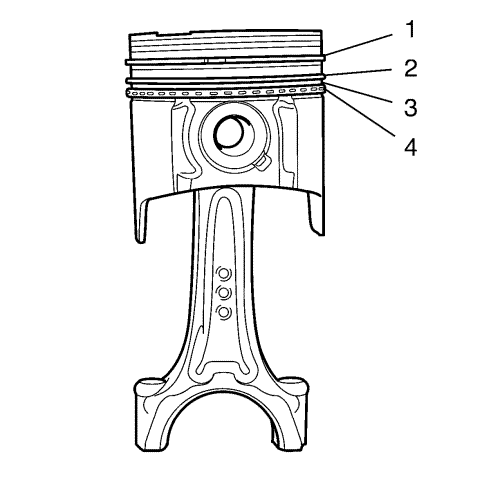
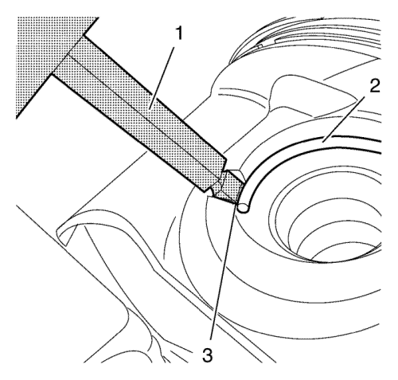

Desarmado del pistón y la biela — 1.4L LUH y LUJ
Herramienta especial
EN-49941 Herramienta de montaje y desmontaje de anillos de seguridad de pistones
Si desea informarse sobre herramientas regionales equivalentes, consultar Herramientas especiales .

Advertencia: Maneje el pistón con cuidado. Los segmentos de pistón desgastados están afilados y pueden provocar lesiones físicas.
- Desmonte los segmentos de pistón. Utilice las tenazas para segmentos de pistón (1)

- Los segmentos de pistón se ordenan del siguiente modo:
| • | Segmento de compresión superior (1) |
| • | Segmento de compresión inferior (2) |
| • | Distanciador de segmentos de engrase y segmentos de pistón (3) y (4) |
- Monte el conjunto del pistón y la biela en un tornillo de banco. Utilice abrazaderas de aluminio

Advertencia: Tenga mucho cuidado al desmontar los anillos elásticos. Utilice siempre una protección ocular adecuada para no sufrir daños.
- Meta la herramienta de desmontaje EN-49941 (1) en la ranura (3) del seguro del bulón del pistón (2) y extráigalo.

- Retire el bulón del pistón (2) y la biela (3) del pistón (1).
| © Copyright Chevrolet. All rights reserved |